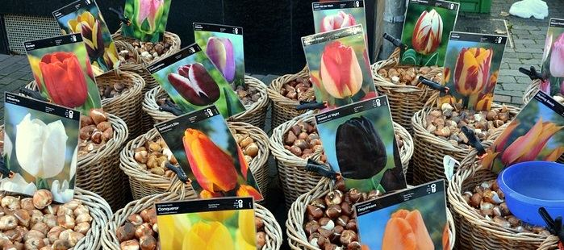

Plants & services
Plants chosen for Northern Arizona gardens, plus the supplies and help to get them growing.
Plants

Outdoor plants
- Annuals
- Perennials
- Trees & shrubs
- Edibles
- Bulbs & seeds

Houseplants
Our tropical house is full of indoor favorites: monstera, pothos, ferns, palms, succulents, orchids and many more.
Houseplants do best when their light, moisture and climate match where they grow wild, and we can help you work out what each one needs.
Supplies & gifts
- Garden gear – tools and products for planting and plant care
- Outdoor living – décor and extras for patio, deck and yard
- Home & gift – indoor décor and a gift shop with unique rustic items
- Wild birding – feeders, bird baths, bird houses and wild bird food
Services
Custom potting
Our staff can create a custom container planting for your patio, deck or home. Buy an indoor plant and pot from our tropical house and we’ll pot it up for free.
Delivery & planting
Delivery in and around Flagstaff for a reasonable fee. Our planting crew can install your new trees and shrubs; plantings by Warner’s are guaranteed for a full year.
Tree & shrub guarantee
Eligible trees and shrubs carry a standard 90-day guarantee, extendable to one year for homeowners who follow Warner’s planting guide. Conditions apply; ask in store.
Kids & field trips
Free Kid’s Club activities every other Saturday in summer, and garden field trips for groups of 2–50 in any season. Call to schedule a tour.
Ask about fees, timelines and details in store or by phone at (928) 774-1983. For landscape design and installation, ask about our sister company, Warner’s Landscape Co.